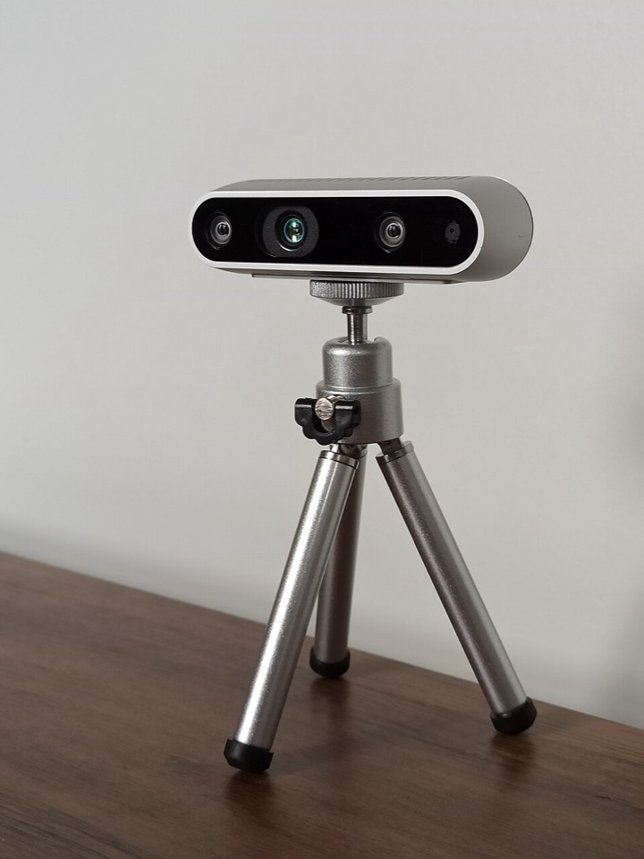

Commission a simulated robot inspection cell
Put a camera, a depth reading, an inspection model and a controller decision into one work sequence. Then make each signal fail independently and prove what the simulator does.
Follow one part through the cell
A fixture holds a part. A camera reports the part ID, a capture timestamp, a qualified depth and the model’s label and score. A separate controller receives those signals and the fixture inputs. Its simulated response can be hold, review, request inspection reject or request a simulated pick. Each new part gets its own record before image processing starts.

Photo by Lexington Medical, Inc, scaled for the course. Original photo · CC0.


Photo by Marc Auledas, scaled for the course. Original photo · CC BY-SA 4.0.

Watch on YouTube · Observe which information a vision system reports and which parts of the demonstration belong to the robot. Pickit’s robot vision demonstration.
The lab works from recorded data on an ordinary computer. Its software has no connection to equipment. Actual motion requires a validated cell design with documented safety functions, and a camera-to-robot transform verified independently of the model score.
Run the normal case and deliberately fail each input
Save both files in the same folder and run the script with Python 3. It compares each decision with the independently recorded expected result. The first failed condition is printed so you can explain the order of checks.
Download the Python simulator · Download the ten-case worksheet.
python3 inspection-cell.py| Case | What failed | What the controller sees |
|---|---|---|
| A01 | All checks passed | Request simulated pick |
| A02–A03 | Frame is stale or belongs to an earlier part | Hold and reacquire the current part |
| A04–A06 | Depth missing, model uncertain or defect identified | Hold, review or request inspection reject, according to the cause |
| A07–A08 | Simulator permit missing or fixture unready | Hold even with a valid high-confidence image |
| A09–A10 | Target beyond acceptance range or clock mismatch | Hold and recheck geometry or timestamp |
In the worksheet, age means time since capture using a comparable time base, with a 250 ms training limit. Depth must be valid and land between 725 and 775 mm. With normal, defect or uncertain outcome, use the model confidence cutoff chosen from validation data. The worksheet’s 0.85 cutoff is only an example.
Change one variable and record the commissioning result
- Copy the worksheet and add an exact-boundary case for 250 ms and one for 251 ms. Record the expected result before running either one.
- Try a correctly identified part with a high-confidence model result and a failed fixture sensor. Then restore that input while retaining the previous frame ID. Explain both holds.
- If you have a camera, collect new stills from P46 and P47 and enter their recorded values in the worksheet. Keep image, source time, part ID, measured reference position and model version together.
- For your portfolio, state which signals were from simulated values, which you measured, how you created a fault and what the same test showed after the correction.
A production integrator also proves the transformation from the camera to the robot base with known targets, measures total cycle time and verifies independent safety functions. Compare the layout of commercial 3D systems. Universal Robots 3D vision and handling demonstration.